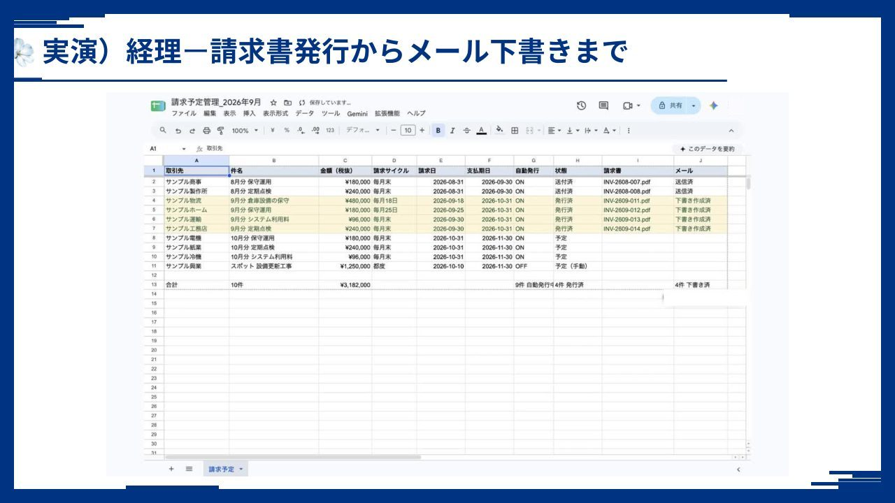

01
第1部
AXの必要性
日本におけるAIの一般化
86.4
%
企業
生成AIを業務で使っている
58.8
%
個人
生成AIを使ったことがある
調べる・書くだけでなく、発注や採用にも入り始めています。
出典：総務省「令和8年版 情報通信白書」
基幹システムとの違い
よくある形
完成品を買う
私たちの形
作れるようになる
お金を払う対象が違います。
経理 請求書の作成と確認
これまで
月32時間
AIで
月5時間
金額（時給2,000円換算）
月6.4万円
制作日数
制作3日
※ 従業員100名規模の目安。AIの間違いを人がチェックする仕事は残ります。
進め方
01
伴走で課題に気づく
実際の業務で、一緒に作ります
02
「楽になった」を作る
使えると分かってから、広がります
03
全体へ
最後に、全員のスタートラインを揃えます
実演）請求書が下書きに溜まる
放っておくと、
できている。
請求予定の表から、請求書とメールの下書きまで自動で作ります。

※ 画面は架空のデータです。
研修費用の4分の3は、国から
研修費用
国から助成
4分の3
自己負担
4分の1
1人20万円の研修なら、自己負担は5万円。
※ 金額は例です。
経理の仕事、月あたりの時間
経費申請のチェック
40時間
5時間
請求書の作成と確認
32時間
5時間
支払予定と支払漏れ
16時間
3時間
合わせて、ひと月
75時間
減ります。
※ 従業員100名規模の目安。グレー＝これまで、紺＝AIで。